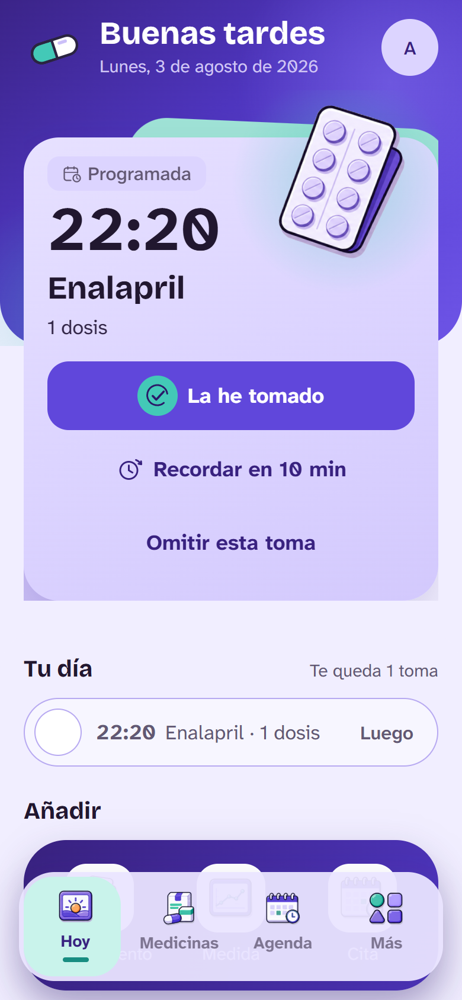
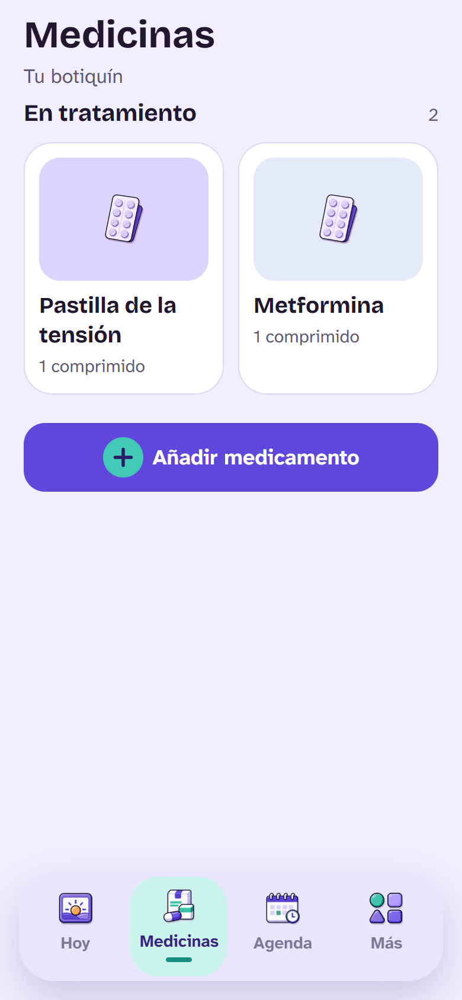
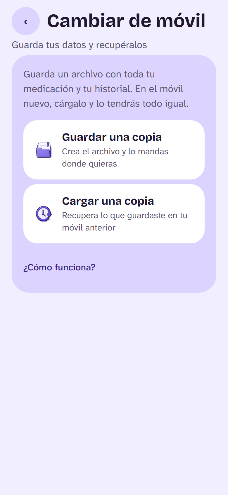

Android 7 o superior. Actualizado el 4 de agosto de 2026.
Cómo se instala
Descarga el archivo desde este mismo móvil.
Ábrelo. Android te preguntará si permites instalar desde el navegador: es normal
cuando una aplicación no viene de la tienda, y solo hay que decir que sí una vez.
Instalar y abrir. No pide registro: funciona desde el primer momento.
¿Es seguro instalarla así?
El aviso de Android es de serieSale con cualquier aplicación que no venga de Google Play, sea de quien sea.
No significa que algo vaya mal: significa que no ha pasado por su tienda.
Tus datos no salen del móvilLa medicación, las horas y las fotos de las cajas se guardan en el propio
teléfono. No hay servidor al que se suban ni cuenta obligatoria.
Y se puede desinstalar como cualquier otraSin suscripciones, sin registro y sin dejar nada detrás.
Qué hace
Te dice qué toca ahoraLa próxima toma en grande, con su hora y su foto. Confirmas de un toque, y si te equivocas se deshace igual de fácil.
Guarda lo que tú marcasNo adivina nada ni interpreta análisis. Anota lo que confirmas para que puedas enseñárselo a tu médico.
Avisa aunque no tengas internetLos recordatorios son del propio móvil. Y en la pantalla bloqueada no aparece el nombre del medicamento salvo que tú lo pidas.
Al cambiar de móvil no pierdes nadaGuardas un archivo con todo y lo cargas en el nuevo. Sin cuenta y sin depender de nadie.
Cómo se ve



De momento, solo Android
En iPhone no se puede instalar una aplicación desde una web: Apple solo lo permite
a través de la App Store o de TestFlight. La versión de iOS llega por ahí.